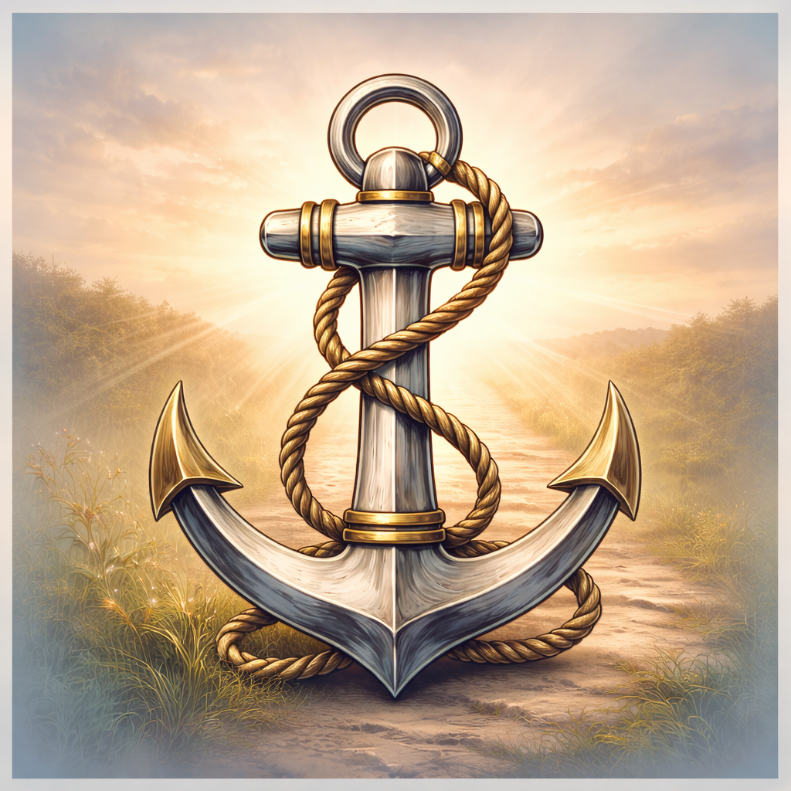

Elora Radiance Co. · Weekly Devotional
Year One
52 weeks of Scripture, study, reflection, prayer, tracking, and community. A full year of walking steadily with God — one week at a time.
$5.50/month · $39/year · Works on any device
See It in Action
A walkthrough of Anchored Steps — the daily verse, reflection, and share card experience.
Anchored Steps Year 1 — Full App Walkthrough
What's Inside
Each week opens with the key Scripture passages for that theme. Multiple verses with context, cross-references, and memorization tools built in.
A visual verse mapping tool that helps you connect Scripture to other passages — see the full counsel of God on each theme.
More than surface reading. Each week includes a full study section — background, theology, and application to help you go deep in the Word.
Guided reflection questions and application prompts that move Scripture from your head into your daily life — where it was always meant to land.
A weekly prayer written for the theme — plus space to write your own personal prayer. Scripture and prayer in the same place every week.
Track your weekly consistency and see your growth over the year. Progress is visible — which builds the habit of coming back.
Bookmark any verse across the 52 weeks to a personal saved library — your own curated collection of the Scriptures that moved you.
Connect with others on the same journey. The community tab brings a shared dimension to personal study — you're not walking alone.
Share any week's key verse as a beautiful card on social media — spreading the Word with one tap.
How It Works
Add Anchored Steps to your home screen so it's one tap away. Make it part of your morning — before the noise starts.
The app opens to the current week of 52. Each week has a theme rooted in Scripture — open it Monday morning and let it anchor your week.
Work through Scripture, the study notes, reflection questions, and the week's prayer. Go deep or skim — come back as often as you need to.
Tap the share card to send the verse to a friend, post it to social media, or save it for yourself. The Word is meant to spread.
"Walk steadily. Stay anchored. The Word is a lamp to your feet and a light to your path."
Psalm 119:105 — One step at a time.
365 days of Scripture, reflection, and prayer. Free, always. No account. No App Store. Just open and begin.
⚓ Open Anchored Steps$5.50/month or $39/year · Then continue with Year 2